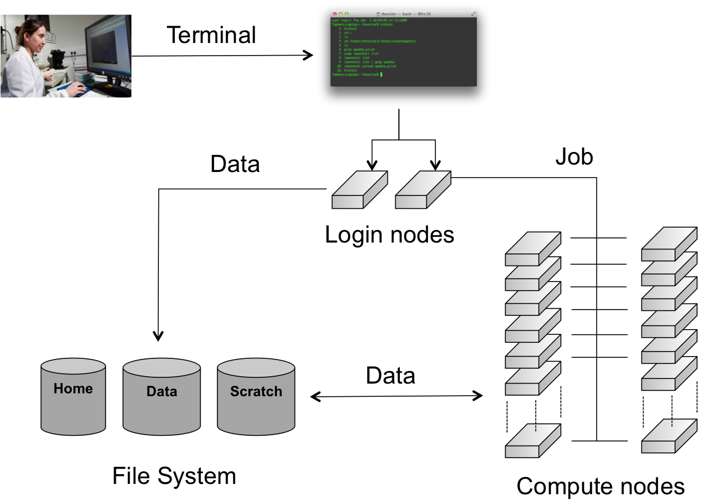

Running batch jobs#
In order to have access to the compute nodes of a cluster, you have to use the job system. The system software that handles your batch jobs consists of two pieces: the queue- and resource manager TORQUE and the scheduler Moab. Together, TORQUE and Moab provide a suite of commands for submitting jobs, altering some of the properties of waiting jobs (such as reordering or deleting them), monitoring their progress and killing ones that are having problems or are no longer needed. Only the most commonly used commands are mentioned here.

When you connect to the HPC, you have access to (one of) the login nodes of the cluster. There you can prepare the work you want to get done on the cluster by, e.g., installing or compiling programs, setting up data sets, etc. The computations however, should not be performed on this login node. The actual work is done on the cluster's compute nodes. Each compute node contains a number of CPU cores. The compute nodes are managed by the job scheduling software (Moab) and a Resource Manager (TORQUE), which decides when and on which compute nodes the jobs can run. It is usually not necessary to log on to the compute nodes directly and is only allowed on the nodes where you have a job running . Users can (and should) monitor their jobs periodically as they run, but do not have to remain connected to the HPC the entire time.
The documentation in this "Running batch jobs" section includes a description of the general features of job scripts, how to submit them for execution and how to monitor their progress.
Modules#
Software installation and maintenance on a HPC cluster such as the VSC clusters poses a number of challenges not encountered on a workstation or a departmental cluster. We therefore need a system on the HPC, which is able to easily activate or deactivate the software packages that you require for your program execution.
Environment Variables#
The program environment on the HPC is controlled by pre-defined settings, which are stored in environment (or shell) variables. For more information about environment variables, see the chapter "Getting started", section "Variables" in the intro to Linux.
All the software packages that are installed on the HPC cluster require different settings. These packages include compilers, interpreters, mathematical software such as MATLAB and SAS, as well as other applications and libraries.
The module command#
In order to administer the active software and their environment variables, the module system has been developed, which:
-
Activates or deactivates software packages and their dependencies.
-
Allows setting and unsetting of environment variables, including adding and deleting entries from list-like environment variables.
-
Does this in a shell-independent fashion (necessary information is stored in the accompanying module file).
-
Takes care of versioning aspects: For many libraries, multiple versions are installed and maintained. The module system also takes care of the versioning of software packages. For instance, it does not allow multiple versions to be loaded at same time.
-
Takes care of dependencies: Another issue arises when one considers library versions and the dependencies they require. Some software requires an older version of a particular library to run correctly (or at all). Hence a variety of version numbers is available for important libraries. Modules typically load the required dependencies automatically.
This is all managed with the module command, which is explained in the
next sections.
There is also a shorter ml command that does exactly the same as the
module command and is easier to type. Whenever you see a module
command, you can replace module with ml.
Available modules#
A large number of software packages are installed on the HPC clusters. A list of all currently available software can be obtained by typing:
module available
It's also possible to execute module av or module avail, these are
shorter to type and will do the same thing.
This will give some output such as:
module avail
--- /apps/gent/RHEL8/zen2-ib/modules/all ---
ABAQUS/2021-hotfix-2132
ABAQUS/2022-hotfix-2214
ABAQUS/2022
ABAQUS/2023
ABAQUS/2024-hotfix-2405 (D)
...
Or when you want to check whether some specific software, some compiler or some application (e.g., MATLAB) is installed on the HPC.
module avail matlab
--- /apps/gent/RHEL8/zen2-ib/modules/all ---
LIBSVM-MATLAB/3.30-GCCcore-11.3.0-MATLAB-2022b-r5
MATLAB/2019b
MATLAB/2021b
MATLAB/2022b-r5 (D)
SPM/12.5_r7771-MATLAB-2021b
This gives a full list of software packages that can be loaded.
The casing of module names is important: lowercase and uppercase letters matter in module names.
Organisation of modules in toolchains#
The amount of modules on the VSC systems can be overwhelming, and it is not always immediately clear which modules can be loaded safely together if you need to combine multiple programs in a single job to get your work done.
Therefore the VSC has defined so-called toolchains. A toolchain contains a C/C++
and Fortran compiler, a MPI library and some basic math libraries for
(dense matrix) linear algebra and FFT. Two toolchains are defined on
most VSC systems. One, the intel toolchain, consists of the Intel
compilers, MPI library and math libraries. The other one, the foss
toolchain, consists of Open Source components: the GNU compilers,
OpenMPI, OpenBLAS and the standard LAPACK and ScaLAPACK libraries for
the linear algebra operations and the FFTW library for FFT. The
toolchains are refreshed twice a year, which is reflected in their name.
E.g., foss/2025a is the first version of the foss toolchain in 2025.
The toolchains are then used to compile a lot of the software installed
on the VSC clusters. You can recognise those packages easily as they all
contain the name of the toolchain after the version number in their name
(e.g., Python/3.12.3-GCCcore-13.3.0). Only packages compiled with the
same toolchain name and version can work together without conflicts.
Loading and unloading modules#
module load#
To "activate" a software package, you load the corresponding module file
using the module load command:
module load example
This will load the most recent version of example.
For some packages, multiple versions are installed; the load command
will automatically choose the default version (if it was set by the
system administrators) or the most recent version otherwise (i.e., the
lexicographical last after the /).
**However, you should specify a particular version to avoid surprises when newer versions are installed:
module load secondexample/4.5.6-intel-2023a
The ml command is a shorthand for module load: ml example/1.2.3 is
equivalent to module load example/1.2.3.
Modules need not be loaded one by one; the two module load commands
can be combined as follows:
module load example/1.2.3 secondexample/4.5.6-intel-2023a
This will load the two modules as well as their dependencies (unless there are conflicts between both modules).
module list#
Obviously, you need to be able to keep track of the modules that are
currently loaded. Assuming you have run the module load commands
stated above, you will get the following:
$ module list
Currently Loaded Modules:
1) env/vsc/<cluster> (S) 7) binutils/2.40-GCCcore-12.3.0 13) iimpi/2023a
2) env/slurm/<cluster> (S) 8) intel-compilers/2023.1.0 14) imkl-FFTW/2023.1.0-iimpi-2023a
3) env/software/<cluster> (S) 9) numactl/2.0.16-GCCcore-12.3.0 15) intel/2023a
4) cluster/<cluster> (S) 10) UCX/1.14.1-GCCcore-12.3.0 16) secondexample/4.5.6-intel-2023a
5) GCCcore/12.3.0 11) impi/2021.9.0-intel-compilers-2023.1.0 17) example/1.2.3
6) zlib/1.2.13-GCCcore-12.3.0 12) imkl/2023.1.0
Where:
S: Module is Sticky, requires --force to unload or purge
You can also just use the ml command without arguments to list loaded modules.
It is important to note at this point that other modules (e.g.,
intel/2023a) are also listed, although the user did not explicitly
load them. This is because secondexample/4.5.6-intel-2023a depends on it
(as indicated in its name), and the system administrator specified that
the intel/2023a module should be loaded whenever this
secondexample module is loaded. There are advantages and disadvantages
to this, so be aware of automatically loaded modules whenever things go wrong: they may have something to do with it!
module unload#
To unload a module, one can use the module unload command. It works
consistently with the load command, and reverses the latter's effect.
However, the dependencies of the package are NOT automatically unloaded;
you will have to unload the packages one by one. When the
example module is unloaded, only the following modules remain:
$ module unload example
$ module list
Currently Loaded Modules:
1) env/vsc/<cluster> (S) 7) binutils/2.40-GCCcore-12.3.0 13) iimpi/2023a
2) env/slurm/<cluster> (S) 8) intel-compilers/2023.1.0 14) imkl-FFTW/2023.1.0-iimpi-2023a
3) env/software/<cluster> (S) 9) numactl/2.0.16-GCCcore-12.3.0 15) intel/2023a
4) cluster/<cluster> (S) 10) UCX/1.14.1-GCCcore-12.3.0 16) secondexample/4.5.6-intel-2023a
5) GCCcore/12.3.0 11) impi/2021.9.0-intel-compilers-2023.1.0
6) zlib/1.2.13-GCCcore-12.3.0 12) imkl/2023.1.0
Where:
S: Module is Sticky, requires --force to unload or purge
To unload the example module, you can also use
ml -example.
Notice that the version was not specified: there can only be one version of a module loaded at a time, so unloading modules by name is not ambiguous. However, checking the list of currently loaded modules is always a good idea, since unloading a module that is currently not loaded will not result in an error.
Purging all modules#
In order to unload all modules at once, and hence be sure to start in a clean state, you can use:
module purge
cluster module (the module that specifies
which cluster jobs will get submitted to) will not be unloaded (because
it's a so-called "sticky" module).
Using explicit version numbers#
Once a module has been installed on the cluster, the executables or libraries it comprises are never modified. This policy ensures that the user's programs will run consistently, at least if the user specifies a specific version. Failing to specify a version may result in unexpected behaviour.
Consider the following example: the user decides to use the example
module and at that point in time, just a single version 1.2.3 is
installed on the cluster. The user loads the module using:
module load example
rather than
module load example/1.2.3
Everything works fine, up to the point where a new version of example
is installed, 4.5.6. From then on, the user's load command will load
the latter version, rather than the intended one, which may lead to
unexpected problems. See for example the following section on Module Conflicts.
Consider the following example modules:
$ module avail example/
example/1.2.3
example/4.5.6
Let's now generate a version conflict with the example module, and see
what happens.
$ module load example/1.2.3 example/4.5.6
Lmod has detected the following error: A different version of the 'example' module is already loaded (see output of 'ml').
$ module swap example/4.5.6
Note: A module swap command combines the appropriate module unload
and module load commands.
Search for modules#
With the module spider command, you can search for modules:
$ module spider example
--------------------------------------------------------------------------------
example:
--------------------------------------------------------------------------------
Description:
This is just an example
Versions:
example/1.2.3
example/4.5.6
--------------------------------------------------------------------------------
For detailed information about a specific "example" module (including how to load the modules) use the module's full name.
For example:
module spider example/1.2.3
--------------------------------------------------------------------------------
It's also possible to get detailed information about a specific module:
$ module spider example/1.2.3
------------------------------------------------------------------------------------------
example: example/1.2.3
------------------------------------------------------------------------------------------
Description:
This is just an example
You will need to load all module(s) on any one of the lines below before the "example/1.2.3" module is available to load.
cluster/accelgor
cluster/doduo
cluster/donphan
cluster/gallade
cluster/joltik
cluster/skitty
Help:
Description
===========
This is just an example
More information
================
- Homepage: https://example.com
Get detailed info#
To get a list of all possible commands, type:
module help
Or to get more information about one specific module package:
$ module help example/1.2.3
----------- Module Specific Help for 'example/1.2.3' ---------------------------
This is just an example - Homepage: https://example.com/
Save and load collections of modules#
If you have a set of modules that you need to load often, you can save these in a collection. This will enable you to load all the modules you need with a single command.
In each module command shown below, you can replace module with
ml.
First, load all modules you want to include in the collections:
module load example/1.2.3 secondexample/4.5.6-intel-2023a
Now store it in a collection using module save. In this example, the
collection is named my-collection.
module save my-collection
Later, for example in a jobscript or a new session, you can load all
these modules with module restore:
module restore my-collection
You can get a list of all your saved collections with the
module savelist command:
$ module savelist
Named collection list (For LMOD_SYSTEM_NAME = "<OS>-<CPU-ARCHITECTURE>"):
1) my-collection
To get a list of all modules a collection will load, you can use the
module describe command:
$ module describe my-collection
Currently Loaded Modules:
1) env/vsc/<cluster> (S) 7) binutils/2.40-GCCcore-12.3.0 13) iimpi/2023a
2) env/slurm/<cluster> (S) 8) intel-compilers/2023.1.0 14) imkl-FFTW/2023.1.0-iimpi-2023a
3) env/software/<cluster> (S) 9) numactl/2.0.16-GCCcore-12.3.0 15) intel/2023a
4) cluster/<cluster> (S) 10) UCX/1.14.1-GCCcore-12.3.0 16) secondexample/4.5.6-intel-2023a
5) GCCcore/12.3.0 11) impi/2021.9.0-intel-compilers-2023.1.0 17) example/1.2.3
6) zlib/1.2.13-GCCcore-12.3.0 12) imkl/2023.1.0
To remove a collection, remove the corresponding file in
$HOME/.lmod.d/:
rm $HOME/.lmod.d/my-collection
Getting module details#
To see how a module would change the environment, you can use the
module show command:
$ module show Python-bundle-PyPI/2024.06-GCCcore-13.3.0
help([[
Description
===========
Bundle of Python packages from PyPI
...
Included extensions
===================
alabaster-0.7.16, appdirs-1.4.4, asn1crypto-1.5.1, atomicwrites-1.4.1,
...
wcwidth-0.2.13, webencodings-0.5.1, xlrd-2.0.1, zipfile36-0.1.3, zipp-3.19.2
]])
...
load("GCCcore/13.3.0")
load("Python/3.12.3-GCCcore-13.3.0")
load("cryptography/42.0.8-GCCcore-13.3.0")
load("virtualenv/20.26.2-GCCcore-13.3.0")
...
It's also possible to use the ml show command instead: they are equivalent.
Here you can see that the Python-bundle-PyPI/2024.06-GCCcore-13.3.0 comes with a lot of extensions: alabaster, appdirs, ...
These are Python packages which can be used in your Python scripts.
You can also see the modules the Python-bundle-PyPI/2024.06-GCCcore-13.3.0 module
loads: GCCcore/13.3.0, Python/3.12.3-GCCcore-13.3.0, ...
If you're not sure what all of this means: don't worry, you don't have to know; just load the module and try to use the software.
Getting system information about the HPC infrastructure#
Checking the general status of the HPC infrastructure#
To check the general system state, check https://www.ugent.be/hpc/en/infrastructure/status. This has information about scheduled downtime, status of the system, ...
Getting cluster state#
You can check http://hpc.ugent.be/clusterstate to see information about the clusters: you can see the nodes that are down, free, partially filled with jobs, completely filled with jobs, ....
You can also get this information in text form (per cluster separately)
with the pbsmon command:
$ module swap cluster/donphan
$ pbsmon
4001 4002 4003 4004 4005 4006 4007
_ j j j _ _ .
4008 4009 4010 4011 4012 4013 4014
_ _ . _ _ _ _
4015 4016
_ _
_ free : 11 | X down : 0 |
j partial : 3 | x down_on_error : 0 |
J full : 0 | m maintenance : 0 |
| . offline : 2 |
| o other (R, *, ...) : 0 |
Node type:
ppn=36, mem=751GB
pbsmon only outputs details of the cluster corresponding to the
currently loaded cluster module see the section on Specifying the cluster on which to run.
It also shows details about the nodes in a cluster. In the example, all
nodes have 36 cores and 751 GB of memory.
Defining and submitting your job#
Usually, you will want to have your program running in batch mode, as opposed to interactively as you may be accustomed to. The point is that the program must be able to start and run without user intervention, i.e., without you having to enter any information or to press any buttons during program execution. All the necessary input or required options have to be specified on the command line, or needs to be put in input or configuration files.
As an example, we will run a Perl script, which you will find in the examples subdirectory on the HPC. When you received an account to the HPC a subdirectory with examples was automatically generated for you.
Remember that you have copied the contents of the HPC examples directory to your home directory, so that you have your own personal copy (editable and over-writable) and that you can start using the examples. If you haven't done so already, run these commands now:
cd
cp -r /apps/gent/tutorials/Intro-HPC/examples ~/
First go to the directory with the first examples by entering the command:
cd ~/examples/Running-batch-jobs
Each time you want to execute a program on the HPC you'll need 2 things:
The executable The program to execute from the end-user, together with its peripheral input files, databases and/or command options.
A batch job script , which will define the computer resource requirements of the program, the required additional software packages and which will start the actual executable. The HPC needs to know:
1. the type of compute nodes;
2. the number of CPUs;
3. the amount of memory;
4. the expected duration of the execution time (wall time: Time as
measured by a clock on the wall);
5. the name of the files which will contain the output (i.e.,
stdout) and error (i.e., stderr) messages;
6. what executable to start, and its arguments.
Later on, the HPC user shall have to define (or to adapt) his/her own job scripts. For now, all required job scripts for the exercises are provided for you in the examples subdirectories.
List and check the contents with:
$ ls -l
total 512
-rw-r--r-- 1 vsc40000 193 Sep 11 10:34 fibo.pbs
-rw-r--r-- 1 vsc40000 609 Sep 11 10:25 fibo.pl
In this directory you find a Perl script (named "fibo.pl") and a job script (named "fibo.pbs").
-
The Perl script calculates the first 30 Fibonacci numbers.
-
The job script is actually a standard Unix/Linux shell script that contains a few extra comments at the beginning that specify directives to PBS. These comments all begin with #PBS.
We will first execute the program locally (i.e., on your current login-node), so that you can see what the program does.
On the command line, you would run this using:
$ ./fibo.pl
[0] -> 0
[1] -> 1
[2] -> 1
[3] -> 2
[4] -> 3
[5] -> 5
[6] -> 8
[7] -> 13
[8] -> 21
[9] -> 34
[10] -> 55
[11] -> 89
[12] -> 144
[13] -> 233
[14] -> 377
[15] -> 610
[16] -> 987
[17] -> 1597
[18] -> 2584
[19] -> 4181
[20] -> 6765
[21] -> 10946
[22] -> 17711
[23] -> 28657
[24] -> 46368
[25] -> 75025
[26] -> 121393
[27] -> 196418
[28] -> 317811
[29] -> 514229
Remark: Recall that you have now executed the Perl script locally on one of the login-nodes of the HPC cluster. Of course, this is not our final intention; we want to run the script on any of the compute nodes. Also, it is not considered as good practice, if you "abuse" the login-nodes for testing your scripts and executables. It will be explained later on how you can reserve your own compute-node (by opening an interactive session) to test your software. But for the sake of acquiring a good understanding of what is happening, you are pardoned for this example since these jobs require very little computing power.
The job script contains a description of the job by specifying the command that need to be executed on the compute node:
#!/bin/bash -l
cd $PBS_O_WORKDIR
./fibo.pl
So, jobs are submitted as scripts (bash, Perl, Python, etc.), which specify the parameters related to the jobs such as expected runtime (walltime), e-mail notification, etc. These parameters can also be specified on the command line.
This job script can now be submitted to the cluster's job system for execution, using the qsub (Queue SUBmit) command:
$ qsub fibo.pbs
123456
The qsub command returns a job identifier on the HPC cluster. The important part is the number (e.g., "123456 "); this is a unique identifier for the job and can be used to monitor and manage your job.
Remark: the modules that were loaded when you submitted the job will not be
loaded when the job is started. You should always specify the
module load statements that are required for your job in the job
script itself.
To faciliate this, you can use a pre-defined module collection which you
can restore using module restore, see the section on Save and load collections of modules for more information.
Your job is now waiting in the queue for a free workernode to start on.
Go and drink some coffee ... but not too long. If you get impatient you can start reading the next section for more information on how to monitor jobs in the queue.
After your job was started, and ended, check the contents of the directory:
$ ls -l
total 768
-rw-r--r-- 1 vsc40000 vsc40000 44 Feb 28 13:33 fibo.pbs
-rw------- 1 vsc40000 vsc40000 0 Feb 28 13:33 fibo.pbs.e123456
-rw------- 1 vsc40000 vsc40000 1010 Feb 28 13:33 fibo.pbs.o123456
-rwxrwxr-x 1 vsc40000 vsc40000 302 Feb 28 13:32 fibo.pl
Explore the contents of the 2 new files:
$ more fibo.pbs.o123456
$ more fibo.pbs.e123456
These files are used to store the standard output and error that would otherwise be shown in the terminal window. By default, they have the same name as that of the PBS script, i.e., "fibo.pbs" as base name, followed by the extension ".o" (output) and ".e" (error), respectively, and the job number ('123456' for this example). The error file will be empty, at least if all went well. If not, it may contain valuable information to determine and remedy the problem that prevented a successful run. The standard output file will contain the results of your calculation (here, the output of the Perl script)
When will my job start?#
In practice it's impossible to predict when your job(s) will start, since most currently running jobs will finish before their requested walltime expires, and new jobs by may be submitted by other users that are assigned a higher priority than your job(s).
The HPC-UGent infrastructure clusters use a fair-share scheduling policy (see HPC Policies). There is no guarantee on when a job will start, since it depends on a number of factors. One of these factors is the priority of the job, which is determined by:
-
Historical use: the aim is to balance usage over users, so infrequent (in terms of total compute time used) users get a higher priority
-
Requested resources (amount of cores, walltime, memory, ...). The more resources you request, the more likely it is the job(s) will have to wait for a while until those resources become available.
-
Time waiting in queue: queued jobs get a higher priority over time.
-
User limits: this avoids having a single user use the entire cluster. This means that each user can only use a part of the cluster.
-
Whether or not you are a member of a Virtual Organisation (VO).
Each VO gets assigned a fair share target, which has a big impact on the job priority. This is done to let the job scheduler balance usage across different research groups.
If you are not a member of a specific VO, you are sharing a fair share target with all other users who are not in a specific VO (which implies being in the (hidden) default VO). This can have a (strong) negative impact on the priority of your jobs compared to the jobs of users who are in a specific VO.
See Virtual Organisations for more information on how to join a VO, or request the creation of a new VO if there is none yet for your research group.
Some other factors are how busy the cluster is, how many workernodes are active, the resources (e.g., number of cores, memory) provided by each workernode, ...
It might be beneficial to request less resources (e.g., not requesting all cores in a workernode), since the scheduler often finds a "gap" to fit the job into more easily.
Sometimes it happens that couple of nodes are free and a job would not start. Empty nodes are not necessary empty for your job(s). Just imagine, that an N-node-job (with a higher priority than your waiting job(s)) should run. It is quite unlikely that N nodes would be empty at the same moment to accommodate this job, so while fewer than N nodes are empty, you can see them as being empty. The moment the Nth node becomes empty the waiting N-node-job will consume these N free nodes.
Specifying the cluster on which to run#
To use other clusters, you can swap the cluster module. This is a
special module that change what modules are available for you, and what
cluster your jobs will be queued in.
By default you are working on doduo. To switch to, e.g., donphan you need to redefine
the environment so you get access to all modules installed on the donphan
cluster, and to be able to submit jobs to the donphan scheduler so your jobs
will start on donphan instead of the default doduo cluster.
module swap cluster/donphan
Note: the donphan modules may not work directly on the login nodes, because the
login nodes do not have the same architecture as the donphan cluster, they have
the same architecture as the doduo cluster however, so this is why by default
software works on the login nodes. See the section on Running software that is incompatible with host for why this is and how to fix
this.
To list the available cluster modules, you can use the
module avail cluster/ command:
$ module avail cluster/
--------------------------------------- /etc/modulefiles/vsc ----------------------------------------
cluster/accelgor (S) cluster/doduo (S,L) cluster/gallade (S) cluster/skitty (S)
cluster/default cluster/donphan (S) cluster/joltik (S)
Where:
S: Module is Sticky, requires --force to unload or purge
L: Module is loaded
D: Default Module
If you need software that is not listed,
request it via https://www.ugent.be/hpc/en/support/software-installation-request
As indicated in the output above, each cluster module is a so-called
sticky module, i.e., it will not be unloaded when module purge (see the section on purging modules)
is used.
The output of the various commands interacting with jobs (qsub,
stat, ...) all depend on which cluster module is loaded.
Submitting jobs from one cluster to another#
It is possible to submit jobs from a job to a cluster different than the one your job is running on.
This could come in handy if, for example, the tool used to submit jobs only works on a particular cluster
(or only on the login nodes), but the jobs can be run on several clusters.
An example of this is the wsub command of worker, see also here.
To submit jobs to the donphan cluster, you can change only what is needed in your session environment
to submit jobs to that particular cluster by using module swap env/slurm/donphan instead of using
module swap cluster/donphan.
The last command also activates the software modules that are installed specifically for donphan,
which may not be compatible with the system you are working on.
By only swapping to env/slurm/donphan, jobs that are submitted will be sent to the donphan cluster.
The same approach can be used to submit jobs to another cluster, of course.
Each cluster module not only loads the corresponding env/slurm/... module to control where jobs are sent to,
but also two other env/... modules which control other parts of the environment.
For example, for the doduo cluster,
loading the cluster/doduo module corresponds to loading 3 different env/ modules:
env/ module for doduo |
Purpose |
|---|---|
env/slurm/doduo |
Changes $SLURM_CLUSTERS which specifies the cluster where jobs are sent to. |
env/software/doduo |
Changes $MODULEPATH, which controls what software modules are available for loading. |
env/vsc/doduo |
Changes the set of $VSC_ environment variables that are specific to the doduo cluster |
We recommend that you do not use these separate env/ modules directly unless you really need to,
and only if you understand what they are doing exactly.
Since mixing cluster/ and env/ modules of different clusters can result in surprises if you are not careful.
We also recommend using a module swap cluster command after submitting the jobs.
This to "reset" your environment to a sane state.
Monitoring and managing your job(s)#
Using the job ID that qsub returned, there are various ways to monitor
the status of your job. In the following commands, replace 12345 with
the job ID qsub returned.
qstat 12345
To show on which compute nodes your job is running, at least, when it is running:
qstat -n 12345
To remove a job from the queue so that it will not run, or to stop a job that is already running.
qdel 12345
When you have submitted several jobs (or you just forgot about the job ID), you can retrieve the status of all your jobs that are submitted and are not yet finished using:
$ qstat
:
Job ID Name User Time Use S Queue
----------- ------- --------- -------- - -----
123456 .... mpi vsc40000 0 Q short
Here:
Job ID the job's unique identifier
Name the name of the job
User the user that owns the job
Time Use the elapsed walltime for the job
Queue the queue the job is in
The state S can be any of the following:
User hold means that the user can remove the hold. System hold means that the system or an administrator has put the job on hold, very likely because something is wrong with it. Check with your helpdesk to see why this is the case.
Examining the queue#
There is currently (since May 2019) no way to get an overall view of the state of the cluster queues for the HPC-UGent infrastructure infrastructure, due to changes to the cluster resource management software (and also because a general overview is mostly meaningless since it doesn't give any indication of the resources requested by the queued jobs).
Specifying job requirements#
Without giving more information about your job upon submitting it with qsub, default values will be assumed that are almost never appropriate for real jobs.
It is important to estimate the resources you need to successfully run your program, such as the amount of time the job will require, the amount of memory it needs, the number of CPUs it will run on, etc. This may take some work, but it is necessary to ensure your jobs will run properly.
Generic resource requirements#
The qsub command takes several options to specify the requirements, of which we list the most commonly used ones below.
qsub -l walltime=2:30:00 ...
For the simplest cases, only the amount of maximum estimated execution time (called "walltime") is really important. Here, the job requests 2 hours, 30 minutes. As soon as the job exceeds the requested walltime, it will be "killed" (terminated) by the job scheduler. There is no harm if you slightly overestimate the maximum execution time. If you omit this option, the queue manager will not complain but use a default value (one hour on most clusters).
The maximum walltime for HPC-UGent clusters is 72 hours.
If you want to run some final steps (for example to copy files back) before the walltime kills your main process, you have to kill the main command yourself before the walltime runs out and then copy the file back. See the section on Running a command with a maximum time limit for how to do this.
qsub -l mem=4gb ...
The job requests 4 GB of RAM memory. As soon as the job tries to use more memory, it will be "killed" (terminated) by the job scheduler. There is no harm if you slightly overestimate the requested memory.
The default memory reserved for a job on any given HPC-UGent cluster is the "usable memory per node" divided by the "numbers of cores in a node" multiplied by the requested processor core(s) (ppn). Jobs will request the default memory without defining memory for the job, either as a command line option or as a memory directive in the job script. Please note that using the default memory is recommended. For "usable memory per node" and "number of cores in a node" please consult https://www.ugent.be/hpc/en/infrastructure.
qsub -l nodes=5:ppn=2 ...
The job requests 5 compute nodes with two cores on each node (ppn stands for "processors per node", where "processors" here actually means "CPU cores").
qsub -l nodes=1:westmere
The job requests just one node, but it should have an Intel Westmere processor. A list with site-specific properties can be found in the next section or in the User Portal ("VSC hardware" section)1 of the VSC website.
These options can either be specified on the command line, e.g.
qsub -l nodes=1:ppn,mem=2gb fibo.pbs
or in the job script itself using the #PBS-directive, so "fibo.pbs" could be modified to:
#!/bin/bash -l
#PBS -l nodes=1:ppn=1
#PBS -l mem=2gb
cd $PBS_O_WORKDIR
./fibo.pl
Note that the resources requested on the command line will override those specified in the PBS file.
Job output and error files#
At some point your job finishes, so you may no longer see the job ID in the list of jobs when you run qstat (since it will only be listed for a few minutes after completion with state "C"). After your job finishes, you should see the standard output and error of your job in two files, located by default in the directory where you issued the qsub command.
When you navigate to that directory and list its contents, you should see them:
$ ls -l
total 1024
-rw-r--r-- 1 vsc40000 609 Sep 11 10:54 fibo.pl
-rw-r--r-- 1 vsc40000 68 Sep 11 10:53 fibo.pbs
-rw------- 1 vsc40000 52 Sep 11 11:03 fibo.pbs.e123456
-rw------- 1 vsc40000 1307 Sep 11 11:03 fibo.pbs.o123456
In our case, our job has created both output ('fibo.pbs.') and error files ('fibo.pbs.') containing info written to stdout and stderr respectively.
Inspect the generated output and error files:
$ cat fibo.pbs.o123456
...
$ cat fibo.pbs.e123456
...
E-mail notifications#
Generate your own e-mail notifications#
You can instruct the HPC to send an e-mail to your e-mail address whenever a
job begins, ends and/or aborts, by adding the following lines to the job
script fibo.pbs:
#PBS -m b
#PBS -m e
#PBS -m a
or
#PBS -m abe
These options can also be specified on the command line. Try it and see what happens:
qsub -m abe fibo.pbs
The system will use the e-mail address that is connected to your VSC
account. You can also specify an alternate e-mail address with the -M
option:
qsub -m b -M john.smith@example.com fibo.pbs
will send an e-mail to john.smith@example.com when the job begins.
Running a job after another job#
If you submit two jobs expecting that should be run one after another (for example because the first generates a file the second needs), there might be a problem as they might both be run at the same time.
So the following example might go wrong:
$ qsub job1.sh
$ qsub job2.sh
You can make jobs that depend on other jobs. This can be useful for
breaking up large jobs into smaller jobs that can be run in a pipeline.
The following example will submit 2 jobs, but the second job (job2.sh)
will be held (H status in qstat) until the first job successfully
completes. If the first job fails, the second will be cancelled.
$ FIRST_ID=$(qsub job1.sh)
$ qsub -W depend=afterok:$FIRST_ID job2.sh
afterok means "After OK", or in other words, after the first job
successfully completed.
It's also possible to use afternotok ("After not OK") to run the
second job only if the first job exited with errors. A third option is
to use afterany ("After any"), to run the second job after the first
job (regardless of success or failure).